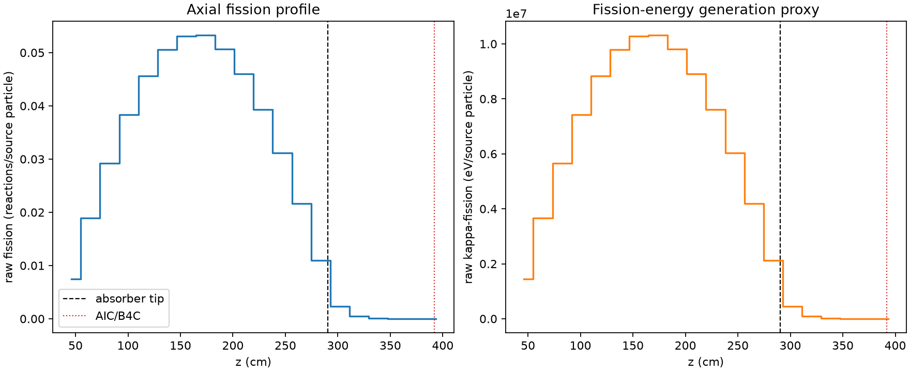
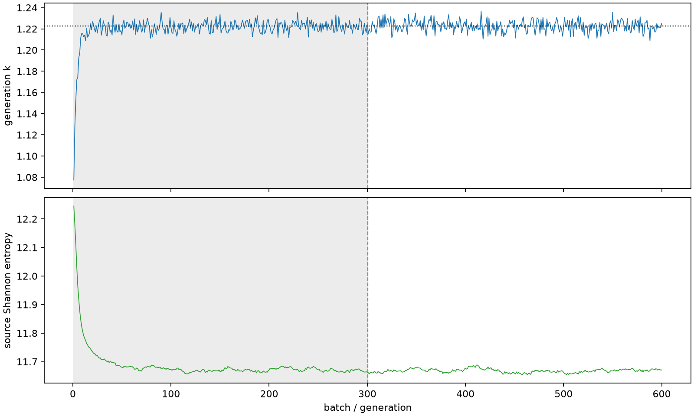

| field | value |
|---|---|
| experiment | V2-STAGE_256_OGRENCI_04-0029 |
| k | 1.2225645160928802 |
| MC standard error | 0.00019791148378935365 |
| seconds | 997.7220622809982 |
| acceptance | not_assessed |
| convergence | review_required |
Completed is output integrity only; physical and statistical review required. Zero tallies do not prove zero production or zero uncertainty.
| diagnostic | value |
|---|---|
| geometric fuel voxels | 5280 |
| zero fission tally voxels | 0 |
| low signal fuel voxels | 791 |
| low signal fission share | 8.288552973423941e-05 |
| low signal kappa share | 8.291476631970737e-05 |
| important fission share | 0.9500864564232164 |
| previous filter included | 4489 |
| duration estimate s | 1562.5173488400023 |
| actual minus estimate s | -564.7952865590041 |
| fission relative MC error | statistics |
|---|---|
| all_geometric_fuel | {"voxels": 5280, "positive_mean_voxels": 5280, "zero_mean_voxels": 0, "undefined_relative_error_voxels": 0, "median": 0.010689528171396283, "p95": 0.5545763851948009, "maximum": 1.0000000000000002} |
| low_signal | {"voxels": 791, "positive_mean_voxels": 791, "zero_mean_voxels": 0, "undefined_relative_error_voxels": 0, "median": 0.4585900253947666, "p95": 0.8797198302292975, "maximum": 1.0000000000000002} |
| important_95pct | {"voxels": 3117, "positive_mean_voxels": 3117, "zero_mean_voxels": 0, "undefined_relative_error_voxels": 0, "median": 0.008150437888203082, "p95": 0.011939587345544858, "maximum": 0.015126370758425975} |
| outside_previous_filter | {"voxels": 791, "positive_mean_voxels": 791, "zero_mean_voxels": 0, "undefined_relative_error_voxels": 0, "median": 0.4585900253947666, "p95": 0.8797198302292975, "maximum": 1.0000000000000002} |
| kappa_fission relative MC error | statistics |
|---|---|
| all_geometric_fuel | {"voxels": 5280, "positive_mean_voxels": 5280, "zero_mean_voxels": 0, "undefined_relative_error_voxels": 0, "median": 0.010676712351048504, "p95": 0.5544657064298208, "maximum": 1.0000000000000002} |
| low_signal | {"voxels": 791, "positive_mean_voxels": 791, "zero_mean_voxels": 0, "undefined_relative_error_voxels": 0, "median": 0.45764391290616624, "p95": 0.8781299954866796, "maximum": 1.0000000000000002} |
| important_95pct | {"voxels": 3117, "positive_mean_voxels": 3117, "zero_mean_voxels": 0, "undefined_relative_error_voxels": 0, "median": 0.008141196052100213, "p95": 0.01192561226462669, "maximum": 0.01510791992083161} |
| outside_previous_filter | {"voxels": 791, "positive_mean_voxels": 791, "zero_mean_voxels": 0, "undefined_relative_error_voxels": 0, "median": 0.45764391290616624, "p95": 0.8781299954866796, "maximum": 1.0000000000000002} |
| axial bin | fission share | kappa-fission share |
|---|---|---|
| 1 | 0.015007220679578891 | 0.015007887013534333 |
| 2 | 0.03786882986831907 | 0.037868728501179415 |
| 3 | 0.05859402162557958 | 0.05859385018392646 |
| 4 | 0.07687028217879008 | 0.07686994706500316 |
| 5 | 0.0912894208210664 | 0.09128902359041181 |
| 6 | 0.10134541410354554 | 0.10134493882802025 |
| 7 | 0.10633699894875955 | 0.10633683049796255 |
| 8 | 0.10665648475080791 | 0.10665580449829394 |
| 9 | 0.10146059505086345 | 0.10146056577632667 |
| 10 | 0.09206358298373431 | 0.09206336399263758 |
| 11 | 0.07871374959642684 | 0.07871347991437058 |
| 12 | 0.06241229645658171 | 0.06241199616581027 |
| 13 | 0.043420674062534644 | 0.043420520225278765 |
| 14 | 0.022000786720731982 | 0.022001279310914917 |
| 15 | 0.004585157637368404 | 0.004586758564868761 |
| 16 | 0.0010436541172763037 | 0.0010440664127469206 |
| 17 | 0.00024775187920031514 | 0.00024785143947582167 |
| 18 | 6.366840677368773e-05 | 6.369084051609955e-05 |
| 19 | 1.545882579883251e-05 | 1.5464379013421362e-05 |
| 20 | 3.9512862625471165e-06 | 3.952799708279648e-06 |
Histories include the inactive-to-active transition at batch 300. kappa-fission approximates fission energy production, not total heat deposition.

